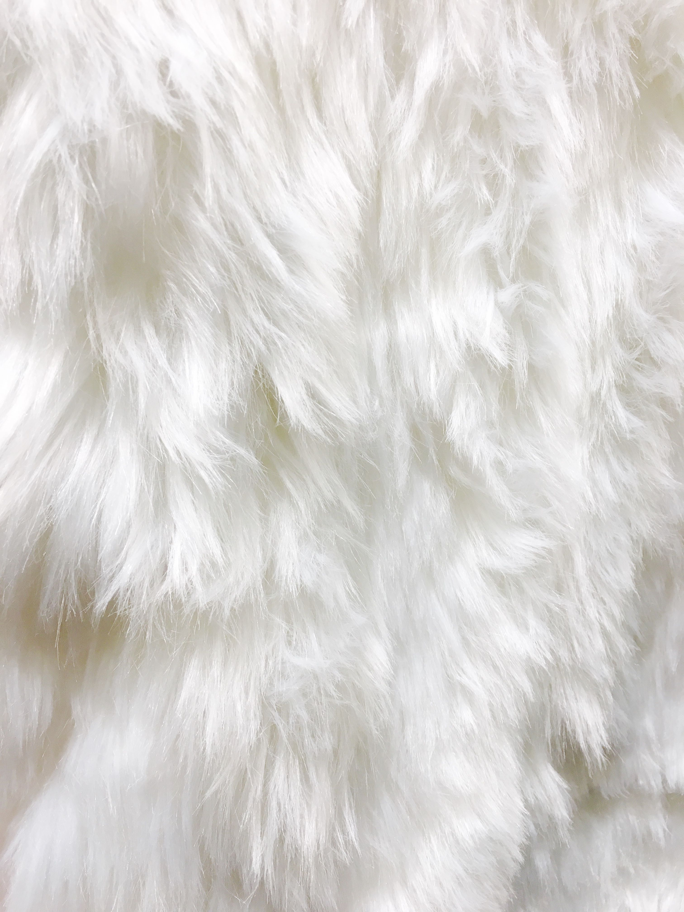

HOGWARTS WORLD
Bem vindo, Bruxo (nome da pessoa)
Saiba mais sobre sua casa!
CORVINAL
Você é da Corvinal
saiba mais sobre ela.
Corvinal
A Casa Corvinal é uma das quatro casas da Escola de Magia e Bruxaria de Hogwarts. Foi fundada por Rowena Ravenclaw, uma bruxa renomada por sua inteligência e sabedoria. Rowena valorizava a mente aguçada e a busca pelo conhecimento, e assim selecionava seus alunos com base nessas qualidades. A Casa Corvinal é conhecida por abrigar bruxos e bruxas criativos, curiosos e com grande sede de aprendizado. Seus membros são frequentemente elogiados por sua inteligência e perspicácia. As cores da Casa Corvinal são azul e prata, e seu símbolo é uma águia. A sala comunal da Corvinal está localizada em uma torre alta, com vista para os terrenos da escola e o Lago Negro. A entrada para a sala comunal é uma ampla escada em espiral, que leva a uma porta de bronze adornada com estrelas. Ao longo dos anos, a Casa Corvinal produziu muitos bruxos e bruxas notáveis. Alguns exemplos incluem Luna Lovegood, conhecida por sua excentricidade e perspectiva única do mundo, e Gilderoy Lockhart, um autor famoso (embora um tanto incompetente) de livros sobre suas supostas proezas mágicas. A Casa Corvinal também tem uma estreita relação com a Casa da Sonserina, muitas vezes competindo em termos acadêmicos e em eventos como a Taça das Casas. Embora seja conhecida por sua inteligência, a Casa Corvinal valoriza a criatividade e a originalidade, reconhecendo que o conhecimento não se limita apenas ao aprendizado teórico, mas também à visão de mundo única que cada membro pode trazer. Os membros da Casa Corvinal são incentivados a explorar seu potencial intelectual, a se esforçar para alcançar seus objetivos e a valorizar a sabedoria acima de tudo. A casa é um lugar de respeito pelo conhecimento e pelo pensamento crítico, onde os alunos são encorajados a se desafiarem e a buscar respostas para as questões mais complexas do mundo da magia e além.
Personagens Principais da Corvinal
Luna Lovegood
Luna Lovegood é um dos personagens mais queridos da série de livros "Harry Potter", escrita pela autora britânica J.K. Rowling. Ela é apresentada pela primeira vez no quinto livro, "Harry Potter e a Ordem da Fênix", e desempenha um papel importante na luta contra o Lord das Trevas, Voldemort, e seus seguidores, os Comensais da Morte. Luna é conhecida por sua personalidade única e excêntrica. Ela tem uma maneira peculiar de ver o mundo e muitas vezes é vista como estranha pelos outros estudantes de Hogwarts. No entanto, sua excentricidade é acompanhada por uma gentileza genuína e uma perspectiva otimista. Uma das características marcantes de Luna é sua crença em criaturas mágicas e eventos incomuns. Ela acredita em coisas que outros consideram absurdas, como os Nargles, criaturas que supostamente roubam objetos. Sua mente aberta e disposição para aceitar o extraordinário fazem dela uma personagem cativante. Além de sua personalidade excêntrica, Luna também é corajosa e leal. Ela se torna uma membro valiosa da Armada de Dumbledore, um grupo secreto liderado por Harry Potter para combater as forças do mal em Hogwarts. Luna está disposta a lutar pelos seus amigos e defender o que ela acredita ser certo, mesmo quando enfrenta o ridículo e a incompreensão dos outros. Quanto às habilidades de Luna, ela demonstra ser uma bruxa talentosa, embora não seja conhecida por ser excepcionalmente poderosa. No entanto, ela possui uma inteligência aguçada e uma intuição especial, o que lhe permite perceber coisas que pass
Filius Flitwick
Filius Flitwick é um personagem importante na série de livros "Harry Potter" de J.K. Rowling. Ele é professor de Feitiços em Hogwarts, a escola de magia e bruxaria, e também é o diretor da Casa de Ravenclaw. Aqui estão algumas informações sobre Filius Flitwick: Filius Flitwick é descrito como um homem pequeno, de cabelos prateados e uma aparência peculiar. Ele é um bruxo talentoso e respeitado, conhecido por sua habilidade excepcional em feitiços e encantamentos. Ele é especialista em encantamentos musicais e tem um papel importante na organização de eventos e competições em Hogwarts, como os duelos de feitiços. Como professor de Feitiços, Flitwick é extremamente dedicado e apaixonado por seu trabalho. Ele é conhecido por ser um professor paciente e encorajador, sempre buscando o melhor desempenho de seus alunos. Ele é visto como um mentor por muitos estudantes, incluindo Harry Potter e seus amigos. Além de suas habilidades como professor, Flitwick também é um duelistas habilidoso. Ele participou da Batalha de Hogwarts, lutando contra os Comensais da Morte e demonstrando coragem e determinação. Sua perícia em feitiços de combate é evidente durante a batalha, onde ele se mostra um adversário formidável. Curiosidade interessante sobre Filius Flitwick: Apesar de sua aparência peculiar, com altura reduzida, Flitwick é revelado como sendo de ascendência goblin. Isso é mencionado no livro "Harry Potter e as Relíquias da Morte", quando Harry, Rony e Hermione o encontram no Banco de Gringotes disfarçado como um duende. Essa revelação adiciona um elemento intrigante à sua personagem, mostrando a diversidade e a mistura de raças no mundo mágico.
Gilderoy Lockhart
Gilderoy Lockhart é um personagem notável na série de livros "Harry Potter" escrita por J.K. Rowling. Ele é apresentado no segundo livro, "Harry Potter e a Câmara Secreta". Aqui estão algumas informações sobre Gilderoy Lockhart: Gilderoy Lockhart é um famoso bruxo e autor de livros sobre suas supostas aventuras heróicas. Ele é conhecido por suas mechas de cabelo loiro platinado, um sorriso brilhante e um ar charmoso. Lockhart é contratado como professor de Defesa Contra as Artes das Trevas em Hogwarts, após a aposentadoria de Quirinus Quirrell. Lockhart é retratado como um indivíduo extremamente vaidoso e egocêntrico. Ele adora se exibir e se vangloriar de suas supostas conquistas e realizações. No entanto, é revelado que ele é um impostor e que suas aventuras heroicas são, na verdade, roubadas de outras pessoas, pois ele usa memórias modificadas para se apropriar dos feitos de bruxos e bruxas de verdade. Embora Lockhart não possua habilidades reais de bruxaria excepcionais, ele é um mestre em encantamentos de memória. Ele usa sua habilidade de modificar memórias para apagar as lembranças daqueles que ele rouba, mantendo assim sua farsa. No entanto, suas tentativas de realizar um encantamento de memória em Harry Potter e Rony Weasley dão errado, resultando em danos a si mesmo e à memória de Rony. Apesar de suas falhas e desonestidade, Gilderoy Lockhart desempenha um papel cômico na história, fornecendo momentos de humor e alívio cômico. Sua personagem serve como uma crítica à vaidade excessiva e ao desejo de fama sem mérito genuíno. Curiosidade interessante sobre Gilderoy Lockhart: Após os eventos de "Harry Potter e a Câmara Secreta", onde sua farsa é revelada, Lockhart perde a memória devido a um acidente com um feitiço de Ron. Ele é internado no Hospital St. Mungus para Doenças e Acidentes Mágicos, onde continua acreditando que é um grande bruxo, embora tenha esquecido sua verdadeira identidade. Essa ironia é um destino adequado para um personagem que falsamente reivindicava ser o herói que ele nunca foi.
Cho Chang
Cho Chang é uma personagem da série de livros "Harry Potter" escrita por J.K. Rowling. Ela é introduzida no terceiro livro, "Harry Potter e o Prisioneiro de Azkaban", e desempenha um papel significativo na trama ao longo dos livros. Aqui estão algumas informações sobre Cho Chang: Cho Chang é uma bruxa nascida na Escócia e é uma aluna da Casa de Corvinal em Hogwarts. Ela é descrita como uma garota bonita, com longos cabelos negros e olhos castanhos. Ela é popular entre os alunos de Hogwarts e é apanhadora no time de Quadribol da Corvinal. A personagem de Cho Chang ganha destaque quando se torna interesse amoroso de Harry Potter. Ela se torna a primeira paixão romântica de Harry na série. Seu relacionamento com Harry é explorado principalmente no quarto livro, "Harry Potter e o Cálice de Fogo", e no quinto livro, "Harry Potter e a Ordem da Fênix". Cho é uma personagem complexa, lidando com o luto e a tristeza pela perda de seu namorado, Cedrico Diggory, que é morto no final do terceiro livro. Essa experiência de perda afeta seu relacionamento com Harry, pois ambos estão lidando com emoções intensas e conflitantes. No quinto livro, Cho se torna membro da Armada de Dumbledore, um grupo secreto liderado por Harry Potter para treinar estudantes em defesa contra as artes das trevas. Embora seu relacionamento com Harry tenha altos e baixos e eventualmente termine, Cho continua a desempenhar um papel na luta contra Voldemort e os Comensais da Morte. Curiosidade interessante sobre Cho Chang: O nome Cho Chang combina nomes comuns chineses e coreanos, o que levou a especulações e discussões sobre sua origem étnica. Embora não seja explicitamente mencionado nos livros, a autora J.K. Rowling confirmou posteriormente que Cho Chang é de ascendência chinesa. Essa diversidade étnica na série de livros destaca a riqueza e a variedade cultural do mundo mágico de Harry Potter.
Myrtle Warren
Myrtle Warren, mais conhecida como Murta Que Geme, é uma personagem da série de livros "Harry Potter" escrita por J.K. Rowling. Ela desempenha um papel significativo na trama, especialmente no segundo livro, "Harry Potter e a Câmara Secreta". Aqui estão algumas informações sobre Myrtle Warren: Myrtle Warren era uma estudante da Casa de Corvinal em Hogwarts. Ela é descrita como uma garota pálida, de óculos e com cabelos castanhos, e é conhecida por sua tristeza e tendência a chorar constantemente. Myrtle era bastante impopular entre seus colegas devido à sua personalidade melancólica e introvertida. A história de Myrtle ganha destaque quando ela é assassinada por Tom Riddle, mais tarde conhecido como Lord Voldemort, quando ele abriu a Câmara Secreta pela primeira vez. Após sua morte, Myrtle se torna um fantasma conhecido como Murta Que Geme. Ela passa a vagar pelos banheiros femininos do segundo andar, particularmente no banheiro feminino da Murta Que Geme. Murta Que Geme é famosa por sua natureza lamentosa e pelo hábito de chorar incessantemente. Ela muitas vezes assombra o banheiro feminino e assusta os estudantes que o frequentam. No entanto, apesar de sua personalidade triste, Myrtle também pode ser bastante mal-humorada e sarcástica, especialmente quando provocada. Embora Murta Que Geme não seja uma personagem central na trama, ela desempenha um papel importante na resolução do mistério da Câmara Secreta. Ela ajuda Harry Potter e seus amigos ao revelar informações cruciais sobre sua morte e sobre a natureza da Câmara Secreta. Curiosidade interessante sobre Myrtle Warren: Murta Que Geme desenvolve uma paixão não correspondida por Harry Potter, provavelmente devido à solidão que enfrenta como fantasma. Ela frequentemente tenta se envolver na vida amorosa de Harry, mesmo que suas tentativas sejam inconvenientes e perturbadoras para ele. Essa dinâmica adiciona um toque de humor e desconforto às interações entre os personagens.
Sybill Trelawney
Sybill Trelawney é uma personagem da série de livros "Harry Potter" escrita por J.K. Rowling. Ela é a professora de Adivinhação em Hogwarts, a escola de magia e bruxaria. Aqui estão algumas informações sobre Sybill Trelawney: Sybill Trelawney é retratada como uma mulher excêntrica e misteriosa. Ela tem cabelos desgrenhados e olhos desfocados, dando-lhe uma aparência distinta e enigmática. Trelawney é conhecida por suas previsões e profecias, embora muitas vezes sejam vagas e imprecisas. Embora Trelawney seja frequentemente ridicularizada e considerada uma charlatã por outros personagens, ela possui um dom real de vidência. Ela é capaz de ter vislumbres do futuro, embora suas previsões nem sempre sejam corretas ou compreendidas adequadamente. No entanto, entre suas muitas previsões imprecisas, ela fez uma profecia crucial que desempenha um papel fundamental na história de Harry Potter. Trelawney é conhecida por sua personalidade dramática e exagerada. Ela gosta de criar um ambiente atmosférico em suas aulas, fazendo uso de objetos e rituais místicos. Ela também é propensa a fazer previsões sombrias e perturbadoras, alimentando o ar de mistério ao seu redor. Apesar de sua aparência excêntrica e suas previsões duvidosas, Trelawney demonstra ter um lado mais sensível e vulnerável. Ela é retratada como uma pessoa insegura e muitas vezes se sente desvalorizada pelos outros. No entanto, ela também mostra momentos de coragem e determinação, especialmente durante a Batalha de Hogwarts, onde ela se envolve na luta contra os Comensais da Morte. Curiosidade interessante sobre Sybill Trelawney: Embora Trelawney geralmente não seja muito precisa em suas previsões, ela faz uma previsão verdadeira sobre a morte de um estudante a cada ano. Ela faz essa previsão no primeiro dia de aula em "Harry Potter e o Prisioneiro de Azkaban" e, de maneira perturbadora, acaba acertando sobre a morte de Cedrico Diggory no final do livro. Essa previsão demonstra que, apesar de suas falhas, Trelawney tem um talento genuíno para a vidência, mesmo que seja inconsistente.
Núcleos De Varinhas:
-

Pena de Fenix
A pena de fênix é um núcleo de varinha bastante especial e poderoso. As penas de fênix são conhecidas por serem extremamente leais aos seus donos e por produzirem varinhas com habilidades excepcionais. A varinha com núcleo de pena de fênix é notável por sua conexão com o mundo das fênix. Essas varinhas têm uma tendência a "escolher" seus donos, respondendo a bruxos e bruxas com características especiais, como coragem, nobreza de espírito e determinação. Essas varinhas são conhecidas por se unirem fortemente aos seus donos, reconhecendo-os como parceiros de confiança.
-

Pelo de Unicórnio
A pena de unicórnio é um dos núcleos utilizados na confecção de varinhas mágicas. As penas de unicórnio são altamente valorizadas por sua pureza e por produzirem varinhas com habilidades especiais. As varinhas com núcleo de pena de unicórnio são conhecidas por serem bastante leais aos seus donos. Elas são frequentemente associadas a bruxos e bruxas que possuem características como compaixão, pureza de coração e uma forte conexão com a natureza.
-

Corda de Coração de Dragão
a corda de coração de dragão é um dos materiais utilizados como núcleo para a fabricação de varinhas mágicas. Ela é obtida a partir do coração de um dragão, criatura mágica poderosa e lendária. As varinhas com núcleo de corda de coração de dragão são notáveis por sua capacidade de realizar feitiços complexos e poderosos. Elas têm um caráter mais agressivo e exigem um domínio preciso e forte determinação de seu dono para serem usadas efetivamente.
Tipos de madeira:
-

Madeira de Sabugueiro
A madeira de sabugueiro é conhecida por sua associação com a magia e a proteção. Varinhas feitas dessa madeira são frequentemente escolhidas por bruxos e bruxas que possuem habilidades curativas e têm uma conexão especial com a natureza. A madeira de sabugueiro é flexível e adaptável, tornando as varinhas feitas dela versáteis e capazes de executar uma ampla gama de feitiços.
-

Madeira de Visgo
A madeira de visgo é considerada rara e misteriosa. Ela é conhecida por ser altamente valorizada por suas propriedades defensivas. Varinhas feitas dessa madeira são frequentemente associadas a bruxos e bruxas habilidosos na arte da duelo e da proteção. A madeira de visgo produz varinhas poderosas e capazes de executar feitiços de escudo e defesa com grande eficácia.
-

Madeira de Nogueira
A madeira de nogueira é associada à sabedoria e à magia ancestral. Varinhas feitas dessa madeira são escolhidas por bruxos e bruxas que valorizam o conhecimento e têm um profundo respeito pela história e tradição. A madeira de nogueira é conhecida por produzir varinhas que são altamente sintonizadas com o poder das palavras e feitiços verbais, tornando-as ideais para bruxos especializados em encantamentos e feitiços linguísticos.
Flexibilidade Das Varinhas:
-
Varinhas Rígidas
As varinhas rígidas são conhecidas por sua falta de flexibilidade. Elas tendem a ser mais estáveis e exigem uma mão firme para controlar seu poder. Varinhas rígidas são frequentemente associadas a bruxos e bruxas que possuem uma natureza disciplinada, determinada e que preferem feitiços de precisão.
-
Varinhas Flexíveis
As varinhas flexíveis possuem uma curva mais suave e são mais maleáveis. Elas se adaptam facilmente às habilidades e estilos de magia de seus usuários. Varinhas flexíveis são escolhidas por bruxos e bruxas que são adaptáveis, criativos e se destacam em feitiços que requerem movimentos fluidos e graciosos.
-
Varinhas Semi-rígidas
As varinhas semi-rígidas são uma combinação entre as características das varinhas rígidas e flexíveis. Elas possuem uma certa resistência, mas também têm alguma flexibilidade. Essas varinhas são escolhidas por bruxos e bruxas que possuem uma personalidade equilibrada e versátil, capazes de lidar com uma variedade de estilos de magia.
-

Curiosidade:
É importante ressaltar que a flexibilidade da varinha pode influenciar o estilo e a eficácia do bruxo em diferentes tipos de feitiços. Cada bruxo tem uma relação única com sua varinha, e a flexibilidade desempenha um papel crucial nessa conexão, afetando a maneira como a magia é canalizada e executada.
Tamanho Das Varinhas:
-
Varinhas Curtas
Varinhas curtas são caracterizadas por terem um tamanho menor em relação às varinhas padrão. Elas geralmente possuem cerca de 20 a 25 centímetros de comprimento. Varinhas curtas são escolhidas por bruxos e bruxas que preferem uma abordagem mais ágil e precisa em sua magia. Essas varinhas são adequadas para movimentos rápidos e feitiços de curta distância.
-
Varinhas Padrão
As varinhas padrão são as mais comuns e populares. Elas geralmente têm entre 25 a 35 centímetros de comprimento. Essas varinhas são versáteis e adequadas para uma ampla gama de estilos de magia. Bruxos e bruxas que possuem varinhas de tamanho padrão têm a vantagem de se adaptar facilmente a diferentes tipos de feitiços e situações.
-
Varinhas Longas
Varinhas longas são caracterizadas por terem um comprimento maior em relação às varinhas padrão. Elas podem variar de 35 a 40 centímetros ou mais. Varinhas longas são frequentemente escolhidas por bruxos e bruxas que preferem uma abordagem mais imponente e poderosa em sua magia. Essas varinhas tendem a ser mais adequadas para feitiços que requerem gestos amplos e poderosos.
-
Curiosidade:
É importante notar que o tamanho da varinha pode afetar a maneira como ela é manejada e como a magia é canalizada. No entanto, a escolha do tamanho da varinha é uma questão de preferência pessoal e não determina a habilidade ou poder do bruxo. Cada bruxo possui uma varinha única, independentemente do tamanho, e é a conexão entre o bruxo e sua varinha que é essencial para realizar a magia com sucesso.
Sala Comunal da Corvinal
Sala Comunal da Corvinal
A sala comunal da casa Corvinal é um espaço único e encantador localizado na Torre de Corvinal, em Hogwarts. Assim como as outras casas, a sala comunal é um lugar exclusivo para os estudantes da Corvinal relaxarem, estudarem e interagirem entre si. A entrada para a sala comunal da Corvinal fica escondida atrás de uma estante de livros em uma parede do corredor do quinto andar. Para acessá-la, é necessário responder a uma charada elaborada. Esse sistema de entrada garante que apenas os membros da Corvinal, conhecidos por sua inteligência e astúcia, possam entrar. Uma vez que a charada é resolvida corretamente, a estante de livros se abre, revelando um caminho que leva a uma sala espaçosa e acolhedora. A sala comunal da Corvinal é conhecida por sua atmosfera tranquila e serena, com tons de azul e prata decorando o espaço. As paredes são adornadas com tapeçarias e prateleiras cheias de livros antigos, destacando o amor pela sabedoria e conhecimento da casa. O ambiente é iluminado por janelas altas e estreitas, permitindo a entrada suave da luz natural durante o dia. À noite, velas flutuantes espalham uma luz suave e acolhedora pela sala. Sofás confortáveis, poltronas e mesas proporcionam espaços de estudo e convivência para os estudantes da Corvinal. A sala comunal da Corvinal também possui uma área reservada para os alunos guardarem seus pertences pessoais, como malas e livros. Essa área é protegida por feitiços de segurança para garantir a privacidade e a integridade dos objetos dos alunos. Além disso, a sala comunal da Corvinal oferece uma vista deslumbrante do terreno de Hogwarts, permitindo que os estudantes apreciem a paisagem pitoresca do castelo e do Lago Negro. A atmosfera geral da sala comunal da Corvinal é tranquila, propícia para o estudo e a reflexão. Ela proporciona um ambiente acolhedor para os membros da casa Corvinal se reunirem, compartilharem conhecimentos e explorarem sua curiosidade intelectual. A sala comunal da Corvinal reflete os valores e características da casa, com sua ênfase na sabedoria, inteligência e criatividade. É um local onde os corvinos se sentem em casa, cercados por livros, aprendizado e uma comunidade de pessoas com ideais semelhantes.
Os três bruxos poderosos mais conhecidos da Corvinal são:
Esses três exemplos destacam bruxos da Corvinal que demonstraram habilidades mágicas notáveis. É importante lembrar que a força mágica de um bruxo não se limita apenas às habilidades em combate, mas também inclui inteligência, sabedoria, criatividade e a capacidade de se conectar com o mundo mágico de maneiras especiais e únicas.
Rowena Ravenclaw
Rowena Ravenclaw foi uma das quatro fundadoras de Hogwarts e a bruxa responsável por estabelecer a casa Corvinal. Ela era conhecida por sua inteligência e sabedoria excepcionais. Rowena era uma bruxa poderosa e astuta, e seu legado é perpetuado na casa Corvinal, que valoriza essas mesmas qualidades. Ela era famosa por sua contribuição para a magia e seu diadema, que se acreditava possuir uma grande quantidade de conhecimento encantado.
Helena Ravenclaw
Filha de Rowena Ravenclaw, Helena Ravenclaw foi uma bruxa talentosa e poderosa. Ela se tornou conhecida como a Dama Cinzenta devido à sua aparição como fantasma na série Harry Potter. Helena Ravenclaw roubou o diadema de sua mãe, buscando sua sabedoria e poder, e desapareceu com ele. Sua capacidade de se esconder e manipular eventos demonstra sua habilidade mágica. Ela se tornou um elemento importante na história do diadema de Rowena Ravenclaw.
Marcus Belby
Embora menos conhecido do que os dois primeiros mencionados, Marcus Belby foi um bruxo da casa Corvinal e um estudante exemplar em Hogwarts. Ele foi destaque no sexto livro, "Harry Potter e o Enigma do Príncipe", onde ele revelou ter inventado uma poção chamada "Antídoto para Venenos Comuns". Essa invenção demonstra sua habilidade em alquimia e seu talento em poções. Embora a série não tenha explorado muito o personagem, sua invenção e reconhecimento na escola mostram seu potencial e habilidades mágicas.
Conquistas
Quadribol - Corvinal
A casa Corvinal tem uma história interessante e respeitável quando se trata de Quadribol, o esporte mais popular no mundo mágico. Embora não haja detalhes específicos sobre conquistas da Corvinal na série Harry Potter, é sabido que a casa tem um histórico sólido no esporte. Ao longo dos anos, os estudantes da casa Corvinal têm demonstrado habilidades notáveis no Quadribol. Eles são conhecidos por sua estratégia inteligente, agilidade e capacidade de pensamento rápido. Os corvinos são estudiosos, criativos e têm uma mente afiada, o que lhes confere uma vantagem no campo de Quadribol. A casa Corvinal tem produzido excelentes jogadores em todas as posições do time de Quadribol. Os corvinos são frequentemente selecionados para serem apanhadores, graças à sua capacidade de observação e reflexos rápidos. Além disso, eles têm demonstrado talento como artilheiros, goleiros e batedores, mostrando versatilidade e habilidades em várias posições. Embora não haja detalhes específicos sobre conquistas da Corvinal no Quadribol, é justo supor que a casa tenha tido sucessos notáveis ao longo dos anos. Eles provavelmente ganharam campeonatos escolares e competiram em alto nível contra as outras casas de Hogwarts. A habilidade da casa Corvinal no Quadribol reflete seu valor em sabedoria e inteligência estratégica. Eles têm uma abordagem metódica e analítica para o jogo, usando seu conhecimento e astúcia para superar seus oponentes. Isso contribui para a reputação da Corvinal como uma casa respeitada e temida nos campos de Quadribol. Embora a série Harry Potter não forneça detalhes específicos sobre as conquistas da Corvinal no Quadribol, é certo que a casa desempenha um papel significativo na história do esporte em Hogwarts, contribuindo com talento, habilidade e inteligência estratégica para o jogo.